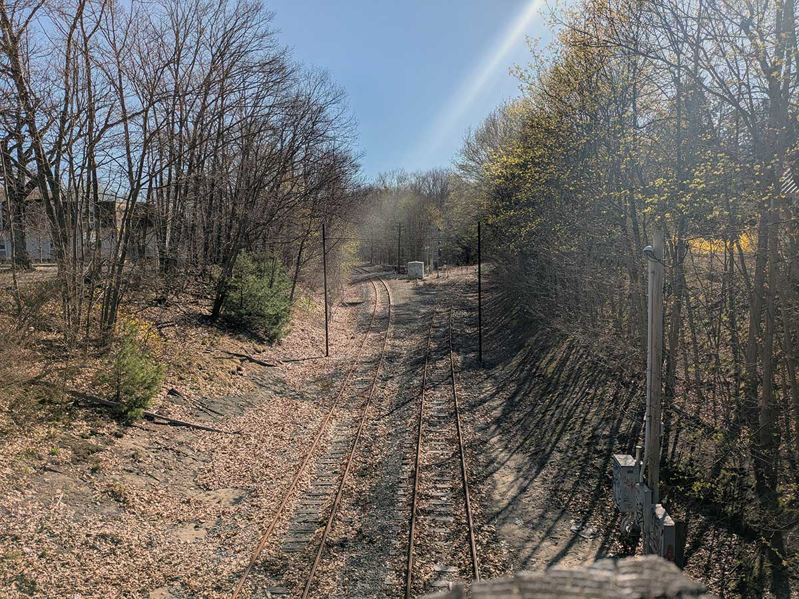

Ahead of our trip, most of the conversations around Brunswick involved specifying that we meant the one in Maine, and then turned to some variation of “Oh. Why?” Admittedly, we didn’t have much of an answer for “What’s in Brunswick?” beyond Bowdoin College. We went here because it’s the northern terminus of Amtrak’s Downeaster, and I wanted to scratch it off the list. Besides, we have friends in Boston. Following the philosophy of never spending more time traveling to a place than you’re in the place itself, we did two nights, and I’m now prepared to give a partial answer to the question of “What’s in Brunswick?”
People
Wednesday morning I went for a walk around town, mostly looking at railroad infrastructure. The first thing I noticed, however, is that when you come to a crosswalk as a pedestrian the cars actually yield to you. This kept happening throughout the day. Later, we went to Twice-Told Tales Book Store. It’s run by volunteers, and proceeds go the local library. Everyone there was genuinely friendly and helped an out-of-towner find a book–Terry Pindell’s Making tracks: an American rail odyssey. Before we left I lightened my luggage by dropping off two books that I’d bought and read during our trip and wasn’t likely to re-read, though I’d enjoyed them: Ben Macintyre’s The Siege and Douglas Preston’s The Lost City of the Monkey God.
The North Pole
Bowdoin claims two prominent Arctic explorers as alumni: Robert Peary and Donald Baxter MacMillan. Closely associated with them is Matthew Henson, son of a sharecropper and possibly the first man to reach the North Pole. On the campus of Bowdoin is the Peary–MacMillan Arctic Museum, part of the Center for Arctic Studies. It’s free and open to the public. When we visited one exhibit, “At Home in the North,” was open, while work was underway to install to “ᖃᓪᓗᓈᖅᑕᐃᑦ ᓯᑯᓯᓛᕐᒥᑦ Printed Textiles from Kinngait Studios.” We’re planning a return visit.
Trains and transit
We’re here because Brunswick is the northern terminus of Amtrak’s Downeaster, which makes multiple daily trips from Boston. The station is located on the old Maine Central Railroad main line (the “lower road”), between two wyes. While I was out and about I saw something I hadn’t seen before–poles with arms over the tracks, with ropes/chains. They resembled catenary poles, but they’re actually tell-tales: an old, manual way for a train crew to know if they’re too tall for a bridge or tunnel.

Besides Amtrak, Concord Coach Lines has a daily bus running between Bangor and Boston, and Greater Portland Metro runs the BREEZ express bus on a regular schedule (not clockface, alas) between Brunswick and Portland via Freeport and Yarmouth. There’s also the Brunswick Link, a free circulator shuttle in Brunswick itself.
Food
Brunswick has a permanent population of about 21,000. That is (in the case of Easton, Pennsylvania, where I live), and is not (in the case of Mt. Pleasant, Michigan, where I grew up ) enough to support a varied and interesting dining scene. Happily, it’s the former case here. We only scratched the surface, and one highlight was Bombay Mahal, which claims to be Maine’s oldest Indian restaurant. Another was Taco the Town, a food truck parked on the Maine Street Mall.
Cormorants
Brunswick sits on the Androscoggin River and was once a mill town. We wandered down to the US-201 crossing a few times. On the west side is the Androscoggin River Reservoir and a dam. It reminds me a little of Turners Falls in Massachusetts. On the east side is a small, rocky outcropping home to a large number of water birds we tentatively identified as cormorants. Several of them had the engaging habit of drifting backwards under the bridge.
What’s next?
We’re planning to come back to see the new exhibit at the Peary museum. Other local museums include the Joshua L. Chamberlain Museum and the Harriet Beecher Stowe House. A docent at Twice-Told Tales told me the local joke that the Civil War started (Uncle Tom’s Cabin) and ended (Chamberlain receiving the Confederate surrender) in Brunswick. Portland and Freeport are day-trips from here. Belfast and Bangor are out of reach–Concord runs one bus per day and no return is possible.